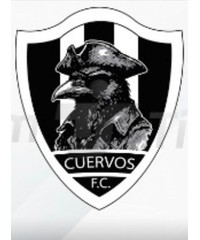
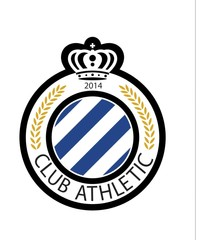
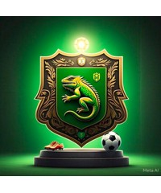
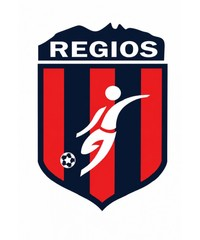
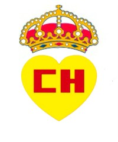

Clausura 2026 · comienza el vuelo
La nueva
parvada.
Cuervos JR inicia su historia en la Liga Premier del Club de Lago. Este será el espacio para seguir sus partidos, jugadores y estadísticas.
Ver partidos
JR
Debut
Septiembre
2026
Liga Premier
Partidos
Roma4–4Cuervos JR
Cuervos JR9–3Lagartos
Real Chapulines2–12Cuervos JR
Cuervos JR8–7Nandigang F.C.
AthleticVSCuervos JR
Cuervos JRVSRegios
Cuervos JRVSAthletic
LagartosVSCuervos JR
1ª fase regular
Tabla general
| Equipo | Pts | PJ | G | E | P | GF | GC | Dif | FP |
|---|---|---|---|---|---|---|---|---|---|
| 1  Cuervos JR | 10 | 4 | 3 | 1 | 0 | 33 | 16 | +17 | 5 |
| 2Roma | 7 | 3 | 2 | 1 | 0 | 14 | 9 | +5 | 0 |
| 3Nandigang F.C. | 6 | 3 | 2 | 0 | 1 | 23 | 17 | +6 | 10 |
| 4  Athletic | 3 | 2 | 1 | 0 | 1 | 17 | 8 | +9 | 5 |
| 5  Lagartos | 3 | 4 | 1 | 0 | 3 | 14 | 32 | -18 | 10 |
| 6  Regios | 0 | 1 | 0 | 0 | 1 | 5 | 10 | -5 | 5 |
| 7  Real Chapulines | 0 | 3 | 0 | 0 | 3 | 7 | 21 | -14 | 0 |
Clasificación oficial de CopaFácil. Corte: 22 de septiembre de 2026.
Primera temporada
Plantel y estadísticas
Eduardo Garza
4 partidos jugados
| Jugador | PJ | G | TA | TR |
|---|---|---|---|---|
| Eduardo Garza | 4 | 13 | 0 | 0 |
| Marcelo Cañamar | 4 | 4 | 0 | 0 |
| Mauricio Marroquín | 4 | 4 | 0 | 0 |
| Luis Páez | 4 | 3 | 0 | 0 |
| Mateo García Mtz. | 4 | 3 | 0 | 0 |
| Patricio Hernández | 4 | 2 | 0 | 0 |
| Emilio González | 4 | 2 | 1 | 0 |
| Diego Mercado | 3 | 1 | 0 | 0 |
| Patricio Cañamar | 4 | 1 | 0 | 0 |
| Alan Hinojosa | 1 | 0 | 0 | 0 |
| Mateo García Vela Portero | 4 | 0 | 0 | 0 |
Canal de Cuervos
Videos
La parvada en acción
Próximamente
Partidos, goles y momentos de Cuervos estarán disponibles aquí.